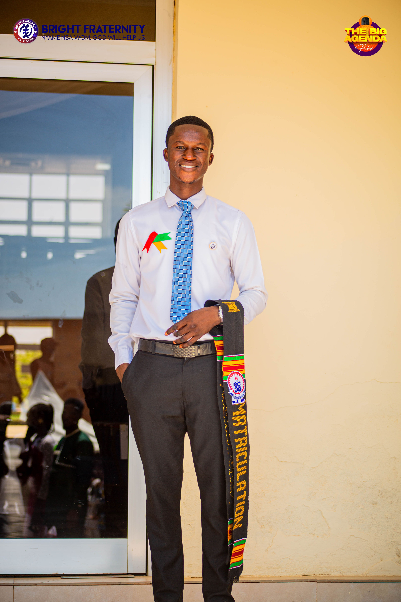

Yakubu David Biakanang
ICT Education Student | Tech Enthusiast | Future Educator
🎓 Level 100 ICT Education Student | Building Real Projects
BSc ICT Education Student | Learning Web Development | Graphic Designer | Young Digital Innovator
Contact Me.jpeg)
ICT Education Student | Tech Enthusiast | Future Educator
🎓 Level 100 ICT Education Student | Building Real Projects
BSc ICT Education Student | Learning Web Development | Graphic Designer | Young Digital Innovator
Contact Me
I am BSc ICT student passionate about learning technology and how it can improve education in communities. My journey started from JHS through EBI, where Expanding Boundaries International(EBI) gifted me laptop for personal studies. It continued through SHS, and now at university, where I am building my foundation in programming, web development, information systems, and educational technology.
I am Yakubu David Biakanang, a passionate ICT student from Ejura-Frante in the Ashanti Region of Ghana. Since my Junior High School days, I have been fascinated by how technology can make life easier and solve realworld problems in communities. I am always curious, growth oriented, and motivated to learn new ICT skills every day.
Currently pursuing BSc in ICT Education at the University of Education, Winneba (UEW), I am developing strong foundations in programming, web development, and information systems. I enjoy learning by creating practical projects like websites and small digital tools that can help communities.
To build strong technical and problem solving skills through my BSc in ICT Education at UEW, focusing on programming, web development, and digital transformation in education.
Technology innovation, programming, web development, digital entrepreneurship, problem solving, community development, knowledge sharing, and educational technology.

.jpeg)
A localized weather forecast tool for farmers, students, and residents in Ejura. Built with HTML, CSS, JavaScript, and OpenWeatherMap API.



.jpeg)
Email: yakububiakanan@gmail.com
Phone: +233 24 132 9673


.jpeg)
.jpeg)

.jpeg)
.jpeg)
.jpeg)


.jpeg)